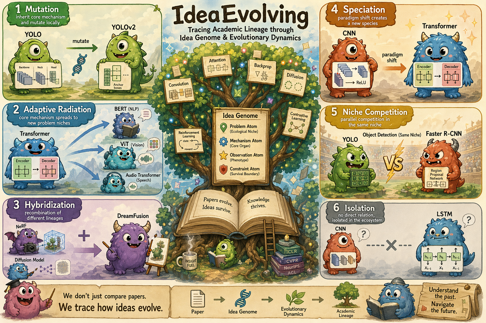
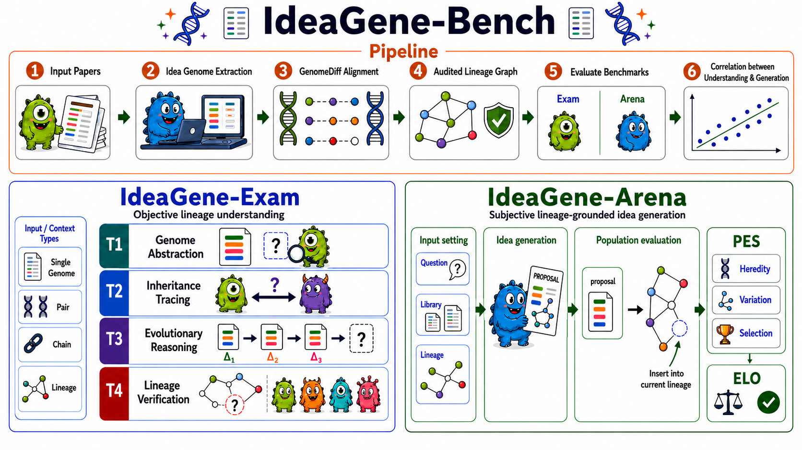

golden lineage traces
Ideas Have Genomes
Scientific ideas are not isolated papers. They have genomes.

Why it matters
Can AI scientists follow the ancestry of an idea?
Research ideas do not appear from nowhere. They inherit mechanisms, repair limitations, and branch into new niches.
Idea Genome objects
GenomeDiff records
scientific domains
IG-Exam task types
closed-form instances
Idea as genome
From papers to inheritable idea atoms.
Idea Genome
The mechanism-level DNA of a scientific idea.
GenomeDiff
What is inherited, mutated, lost, or newly introduced.
Lineage Graph
How ideas move through a research population.
Mutation
Adaptive Radiation
Hybridization
Speciation
Niche Competition
Isolation
Benchmark
Two tracks for lineage understanding and lineage-grounded generation.

IG-Exam
Closed-form tests for genome abstraction, inheritance tracing, evolutionary reasoning, and lineage verification.
IG-Arena
Open-ended proposal evaluation with PES: Heredity, Variation, and Selection.
Results
Current AI scientists still struggle with exact lineage reasoning.
Best exact accuracy: 27.3%
Best T4 verification: 17.4%
Best PES: 86.7
| LLM-based Scientist | IG-Exam | IG-Arena | |||||
|---|---|---|---|---|---|---|---|
| T1 Abstraction |
T2 Tracing |
T3 Reasoning |
T4 Verification |
Total | PES | ELO | |
| Direct LLMs | |||||||
| GPT-5.5 | 27.5 | 25.7 | 23.3 | 16.0 | 23.1 | 86.5 | 1213.2 |
| Claude Opus 4.7 | 28.5 | 21.9 | 17.1 | 14.5 | 19.3 | 82.6 | 1007.2 |
| Qwen3.6-Max-Preview | 26.9 | 22.5 | 18.8 | 17.4 | 20.6 | 79.8 | 882.7 |
| Gemini-3.1-pro-preview | 32.4 | 24.6 | 17.8 | 10.7 | 20.1 | 82.1 | 705.7 |
| Kimi-K2-Thinking | 27.9 | 22.1 | 19.6 | 14.8 | 20.4 | 81.1 | 793.9 |
| DeepSeek-V4-Pro | 23.9 | 20.6 | 18.6 | 8.5 | 17.9 | 82.7 | 918.8 |
| GLM-5.1 | 28.5 | 19.7 | 17.4 | 8.5 | 17.7 | 80.7 | 668.0 |
| MiniMax-M2.7 | 22.9 | 9.1 | 10.9 | 11.6 | 11.9 | 70.5 | 540.8 |
| Research agents | |||||||
| AI Scientist v2 (GPT 5.5) | 28.1 | 26.9 | 22.3 | 15.1 | 23.0 | 80.6 | 1253.3 |
| CoI-Agent (GPT 5.5) | 26.9 | 27.4 | 22.4 | 13.4 | 22.7 | 80.5 | 1249.9 |
| CLI harnesses | |||||||
| Codex (GPT-5.5) | 31.8 | 30.3 | 23.6 | 13.7 | 24.6 | 86.7 | 1476.1 |
| Claude Code (GPT-5.5) | 31.5 | 37.9 | 25.3 | 12.7 | 27.3 | 86.1 | 1420.6 |
| Codex (Claude Opus 4.7) | 34.4 | 29.7 | 17.0 | 10.5 | 21.8 | 82.7 | 900.8 |
| Claude Code (Claude Opus 4.7) | 27.9 | 26.3 | 21.0 | 13.8 | 22.0 | 83.3 | 1159.7 |
Community
Discuss idea genomes with us.
Join the community for updates, benchmark discussion, and future releases.
Citation
Cite Ideas Have Genomes
@misc{zhou2026ideashavegenomes,
title={Ideas Have Genomes: Benchmarking Scientific Lineage Reasoning and Lineage-Grounded Idea Generation},
author={Yifan Zhou and Qihao Yang and Yan Li and Donggang Li and Xiru Hu and Hokin Deng and Ziyang Gong and Xuanyi Zhou and Huacan Wang and Xiangchao Yan and Wanghan Xu and Wenlong Zhang and Shaofeng Zhang and Yue Zhou and Yifan Yang and Zhihang Zhong and Xue Yang},
year={2026},
eprint={2607.08758},
archivePrefix={arXiv},
primaryClass={cs.AI},
url={https://arxiv.org/abs/2607.08758}
}